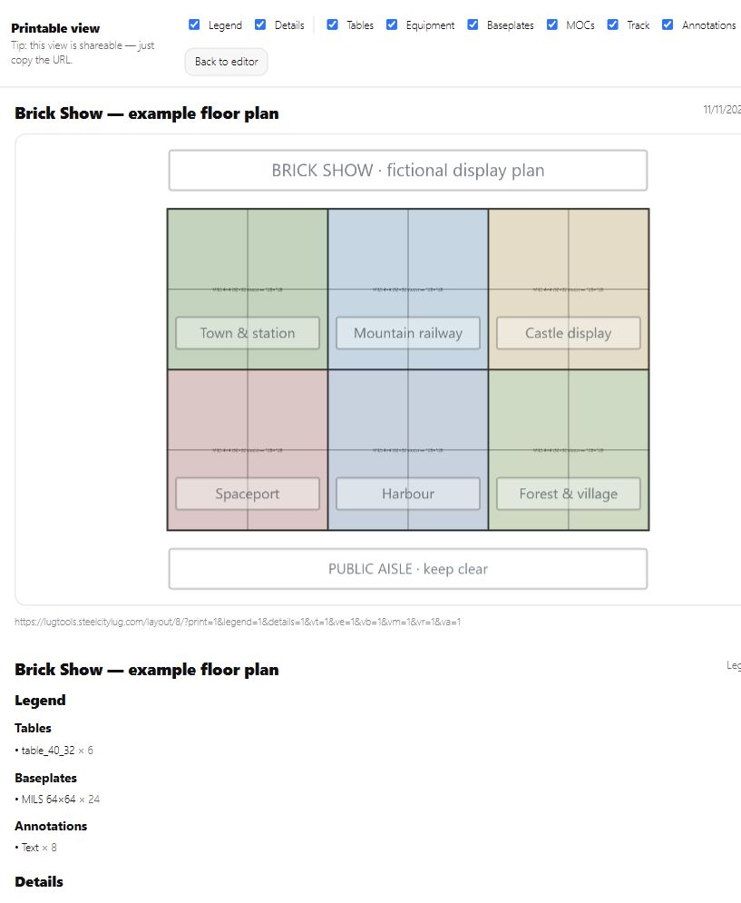
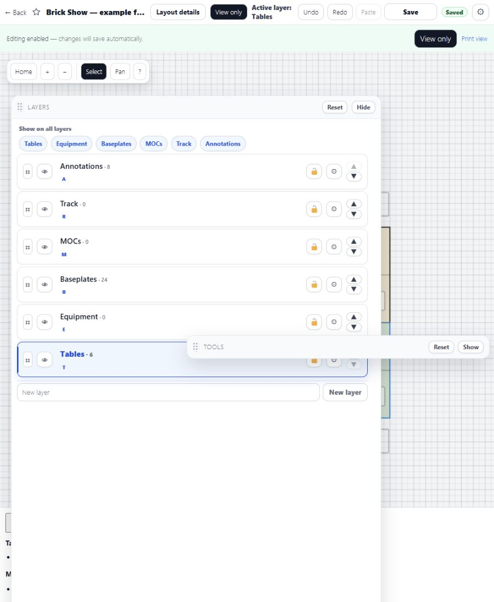
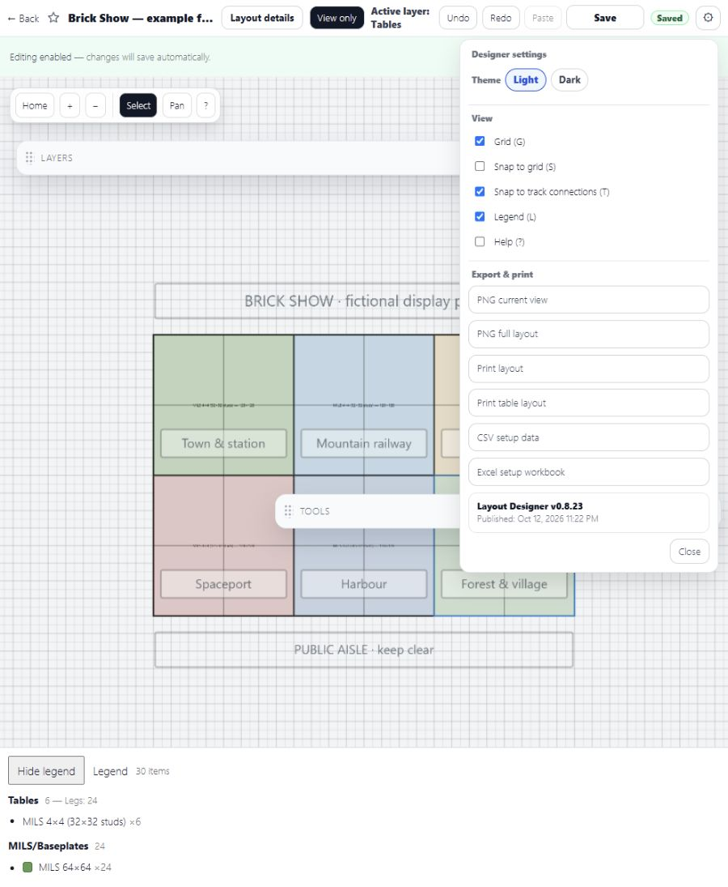

Steel City LUG tools
Plan the display before setup day.
Layout Designer is a browser-based WordPress plugin for planning LEGO displays to scale: tables, baseplates, MOCs, equipment, track and notes in one plan.
Try the demoRead the user guide
A plan the setup crew can use
This fictional six-table display uses MILS table footprints, colored baseplates and labels for each display area. These are real screenshots from the demo, captured November 11, 2026.

Printable plan. Choose which object types, legend and details to include. Open full-size screenshot.

Keep the plan organized. Hide or lock layers, reorder them, and keep different types of objects separate. Full-size image.
Take the plan with you. PNG views, printable plans, table setup sheets, CSV data and an Excel workbook are available from the settings menu. Full-size image.Try it in a few minutes
- Open Getting started and click Try the tools — no password needed.
- Choose Layout Designer, give a new layout a name, then click Create.
- Click Enable editing. Add a table from the palette, then switch to Baseplates or MOCs and add more objects.
- Move, rotate or duplicate objects. Try hiding a layer, adding a note, and opening the export menu.
- Wait for Saved, go back to the list, and reopen your layout.
Demo limits: You get a temporary member session lasting two hours. Your layouts are private and owner-only. Creating or joining shared layouts, invitations and administrative access are disabled. Use fictional information; this is a sandbox, not permanent storage.
Watch the Layout Designer training videos · Explore the other tools